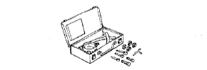
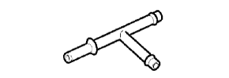
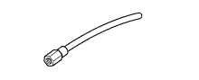

Fuel (2GR-FE) Preparation [Function Inspection]
 | 09268-31012 | Injection Measuring Tool Set |
 | (09268-41500) | Fuel Tube Connector |
| (90467-13001) | Clip | |
 | (95336-08070) | Hose |
 | 09991-70200 | TaSCAN Set |
 | TB-707N | EFI Fuel Pressure Gauge Set Supplied by Banzai Ltd. |
| (TB-GAUGE ) | Gauge Supplied by Banzai Ltd. | |
 | TB-727 | T-joint Supplied by Banzai Ltd. |
 | (TB-14HJ ) | Joint Hose B Supplied by Banzai Ltd. |
| EFI-5T | EFI Fuel Pressure Gauge Set Supplied by Iyasaka Co., Ltd. | |
| (EFI-G ) | Gauge Supplied by Iyasaka Co., Ltd. | |
| EFI-T8 | T-joint Supplied by Iyasaka Co., Ltd. | |
| (EFI-H14 ) | Joint Hose B Supplied by Iyasaka Co., Ltd. |
| Butyl Tape |